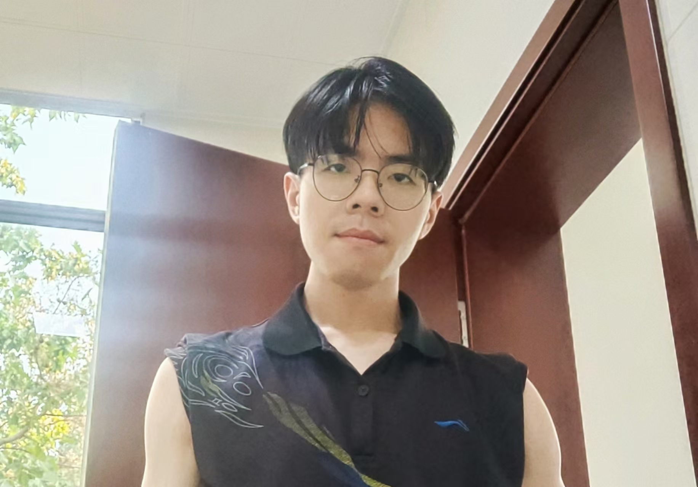

|  |
Yueze WangBeijing Academy of Artificial Intelligence (BAAI) Google ScholarBlog in Student Days Usual Email: |
Biography
I am working on Large Multimodal Models in BAAI. I received the B.S. degree in Communication from Tianjin University, and the M.S. degree in Information & Communication from Tianjin Key Laboratory of Brain Inspired Intelligence Technology, Tianjin University. I once participated in the summer internship of multimodal algorithm in ByteDance.
My interests include data-centric AI for multimodal understanding, generation and retrieval, computer vision and image processing.
According to my conceptualization and definition, multimodal understanding constitutes an Any-to-Text (X2T) task, multimodal generation represents an Any-to-Text (X2I) task, while the interleaved and long-range multimodal understanding, generation, and retrieval form an Any-to-Any (X2X) task.
My preference is to drive various multimodal tasks mainly through effective and efficient Data Research, Engineering and Governance.
They includes: data collection, data synthesis, data filtering/cleaning, data labeling/tagging, data quality inspection/analysis, data processing/construction, data augumentation/optimization, data selection/mixture and iteration in the loop of pretraining, finetuning, reinforcement learning and evaluation.
Selected Works
Selected Competitions
|
2023 Alibaba Cloud Tianchi - FT-Data Ranker: LLM Fine-tuning Data Competition - 7B Track (Rank: 5/377 - Excellent Prize) |
|
2023 Alibaba Cloud Tianchi - FT-Data Ranker: LLM Fine-tuning Data Competition - 1B Track (Rank: 7/383 - Excellent Prize) |
|
2022 Baidu - Network Disk AI Competition: Watermark Intelligent Elimination Competition (Rank: 1/1749 - Champion) |
|
2022 ZTE - Zhongxing Pengyue Algorithm Elite Challenge: Image Denoising Track (Rank: 3/1159 - Regional Winning Prize) |
|
2022 Megvii - MegCup Blind Denoising with Lightweight Model (Rank: 9/508 - Excellent Prize) |
|
2021 iFLYTEK - AI Developer Competition: Multi-modal Advertising Material Classification Challenge (Rank: 2/739 - Second Place) |
|
2021 iFLYTEK - AI Developer Competition: Crop Growth Identification Challenge (Rank: 7/656 - Algorithm Elite Award) |
|
2021 iFLYTEK - AI Developer Competition: Face Key Point Location Challenge (Rank: 3/190 - Third Place) |
|
2021 iFLYTEK - AI Developer Competition: E-commerce Image Retrieval Challenge (Rank: 4/186 - Algorithm Elite Award) |
|
2021 iFLYTEK - AI Developer Competition: Crop Disease Image Recognition Challenge (Rank: 5/530 - Algorithm Elite Award) |
|
2021 Kaggle - Shopee Price Match Guarantee (Multi-modal Retrieval) (Rank: 39/2464 - Silver Medal) |
|
2021 Alibaba Cloud Tianchi - Heartbeat Signal Classification (Rank: 1/2411 - Champion) |
|
2021 FaceBook & NYU - FastMRI: Single-coil Knee Reconstruction Leaderboard - 4x Acceleration Track (Rank: 3/340) |
Selected Honors
2023 TJU Outstanding Graduate
2023 Alibaba Cloud TianChi Elite Developer
2022 WAVE SUMMIT+ Paddle Series Competition Excellent Team Award
2022 Baidu Network Disk AI Star
2021 TJU First-class Scholarship
2020 TJU A-class Special Scholarship
2020 TJU Outstanding Graduate
2020 TJU Grateful Dedication Model Student
2017 13th National Games of the People's Republic of China Volunteer